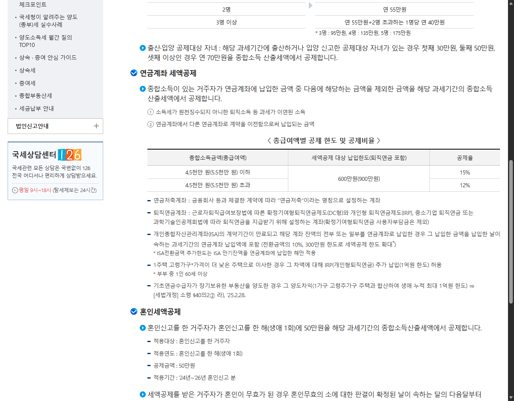

연말정산을 앞두고 연금저축과 IRP를 찾아보면 600만 원과 900만 원이라는 숫자가 함께 나옵니다.
어떤 글은 연금저축이 600만 원이라고 하고, 어떤 글은 IRP까지 합쳐 900만 원이라고 하니 처음 보면 한도가 두 개인 것처럼 느껴집니다.
연금저축만으로 세액공제를 받을 수 있는 납입한도는 600만 원이고, IRP 등 퇴직연금계좌를 포함하면 연금계좌 합계 한도가 900만 원으로 늘어납니다.⏱️ 30초 결론부터
- 생활비와 비상금이 빠듯하다면 한도를 억지로 채우지 않습니다.
- 연금저축은 연 600만 원까지 세액공제 대상입니다.
- IRP 등 퇴직연금계좌를 합치면 전체 한도는 연 900만 원입니다.
- 연금저축 600만 원 + IRP 300만 원은 대표적인 예시일 뿐 정답은 아닙니다.
- 예상 공제액뿐 아니라 돈이 얼마나 오래 묶이는지도 확인합니다.
💰 600만 원과 900만 원의 관계
연금저축 600만 원을 이미 채웠다면 IRP에 300만 원을 추가해 합계 900만 원 한도를 맞출 수 있습니다. 연금저축 400만 원과 IRP 500만 원처럼 나누는 것도 가능합니다.
두 계좌를 따로 보지 말고 해당 연도의 연금계좌 합계로 확인하세요.
📊 국세청 공식 표에서 확인할 부분

🧮 얼마를 공제받을 수 있을까?
총급여액 5,500만 원 이하 또는 종합소득금액 4,500만 원 이하는 15%, 그 기준을 초과하면 12%가 적용됩니다.
| 세액공제 대상 납입액 | 15% 적용 시 | 12% 적용 시 |
|---|---|---|
| 600만 원 | 90만 원 | 72만 원 |
| 900만 원 | 135만 원 | 108만 원 |
👥 내 상황에 대입해보면
A. 당장 쓸 돈이 부족할 수 있다면
세액공제보다 현금 여유가 먼저입니다. 병원비나 자녀 교육비처럼 갑자기 필요한 돈까지 넣지 말고, 매달 무리 없이 유지할 금액부터 정합니다.
B. 연금저축을 이미 꾸준히 넣고 있다면
올해 연금저축 납입액을 먼저 확인합니다. 600만 원을 이미 채웠고 장기간 묶어둘 여유가 있다면 IRP 300만 원을 더해 합계 900만 원을 맞추는 방식을 검토할 수 있습니다.
C. 연말정산 때 환급이 거의 없었다면
추가 납입 전에 지난해 원천징수영수증의 결정세액을 확인합니다. 공제할 세금이 충분하지 않다면 계산상 최대 금액만큼 효과를 체감하지 못할 수 있습니다.
먼저 내 세금과 현금 사정을 확인하고, 그다음 연금저축과 IRP의 순서를 정하세요.
📝 금액별 실제 조합 계산
매달 25만 원을 넣을 수 있다면
1년 납입액은 300만 원입니다. 연금저축에 월 25만 원씩 넣었다면 15% 구간은 45만 원, 12% 구간은 36만 원으로 계산됩니다. 한도를 다 채우지 못해도 실제 납입한 금액만큼 계산되므로 연말에 무리해서 목돈을 넣을 필요는 없습니다.
매달 50만 원을 넣을 수 있다면
1년 납입액은 600만 원입니다. 연금저축만으로 600만 원 한도에 도달합니다. 이때 계산상 세액공제액은 15% 구간 90만 원, 12% 구간 72만 원입니다.
연말에 900만 원을 한 번에 넣으려 한다면
내년 초 자동차 보험료, 자녀 등록금, 명절비, 병원비처럼 예정된 지출이 있는지 먼저 확인합니다. 생활비가 부족해 다시 꺼내야 한다면 세액공제보다 불편과 부담이 더 커질 수 있습니다.
연금계좌는 한도를 채우는 경주가 아니라, 오래 유지할 수 있는 금액을 정하는 과정입니다.🤔 자주 헷갈리는 질문
연금저축에 900만 원을 넣으면 전부 공제되나요?
아닙니다. 연금저축 자체의 세액공제 대상 한도는 600만 원입니다. 전체 900만 원은 IRP 등 퇴직연금계좌를 함께 포함할 때 적용됩니다.
IRP에만 900만 원을 넣어도 되나요?
세액공제 한도 구조상 가능합니다. 다만 IRP는 투자 가능 범위와 중도인출 조건 등이 연금저축과 다르므로 세금 숫자만 보고 고르면 안 됩니다.
부부 합산 900만 원인가요?
각자의 소득과 본인 명의 계좌를 기준으로 판단합니다. 부부 중 누가 공제를 더 체감할 수 있는지는 각자의 결정세액과 소득 구간, 납입 여력을 따로 확인해야 합니다.
회사 퇴직연금도 900만 원에 포함되나요?
회사가 부담한 금액과 개인이 추가 납입한 금액은 구분해야 합니다. 연말정산에서는 본인이 실제 추가 납입한 세액공제 대상 금액을 확인하는 것이 중요합니다.
⚠️ 납입 전에 놓치기 쉬운 것
- 회사 부담금과 개인 납입액: 회사가 부담한 퇴직연금과 본인이 추가로 낸 IRP 금액을 구분합니다.
- 중도 인출: IRP는 법에서 정한 사유에 해당할 때 중도인출이 가능하므로 조건을 먼저 확인합니다.
- ISA 만기자금: 연금계좌로 전환하면 전환금액의 10%, 최대 300만 원 범위에서 추가 한도가 생길 수 있습니다.
- 납입확인서: 금융회사 자료와 국세청 간소화 자료를 마지막에 대조합니다.
📌 결정 순서 7단계
- 올해 연금저축과 IRP의 본인 납입액을 확인합니다.
- 총급여액 또는 종합소득금액 구간을 봅니다.
- 생활비와 비상금을 먼저 남깁니다.
- 연금저축 600만 원 범위의 추가 여력을 확인합니다.
- 더 납입할 수 있다면 합계 900만 원 범위를 봅니다.
- 수수료·투자 가능 자산·중도인출 조건을 비교합니다.
- 간소화 자료와 납입확인서로 최종 금액을 확인합니다.
✅ 마지막으로 기억할 숫자
600만 원 — 연금저축 세액공제 대상 한도
900만 원 — IRP 등을 포함한 연금계좌 합계 한도
15% — 총급여 5,500만 원 이하 등 기준 충족 시
12% — 위 소득 기준 초과 시
연금저축과 IRP는 연말에 급하게 채우기보다 매달 감당할 수 있는 금액으로 나누는 편이 관리하기 쉽습니다. 부부가 각각 계좌를 가지고 있다면 이 글을 저장해두고, 누구 계좌에 얼마를 넣었는지부터 따로 정리해보세요. 😊
※ 국세청 공식 기준을 정리한 일반 정보이며 특정 금융상품 가입을 권유하지 않습니다. 개인별 세액공제와 연말정산 결과는 소득·납부세액·계좌 내역에 따라 달라질 수 있습니다.
공식 참고자료
국세청 근로소득 세액공제 및 연금계좌 세액공제
고용노동부 1350 개인형퇴직연금제도(IRP) 중도인출 안내
확인 기준일: 2026-08-26